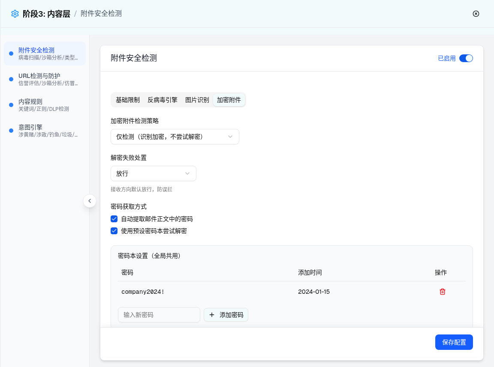
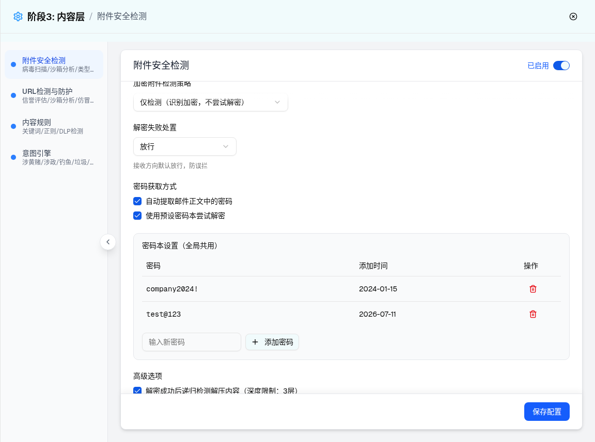
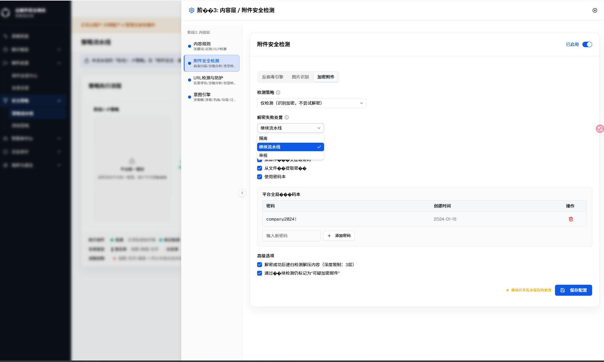

| 所属组件 | 2.3 附件安全检测配置 Tab 组 AttachmentSecurityModule |
| 主文件 | index.html |
| 触发路径 | 层级1 抽屉默认态 → Tab 组点击「加密附件」 |
| demo 组件 | attachment-security-module.tsx → EncryptedAttachmentTab（direction=receive；该子组件无 language 参数，文案全部硬编码中文） |
| 浏览器实测 | 面板节点 72；combobox [仅检测（识别加密，不尝试解密）, 放行]；checkbox 4 个全 checked；密码本 1 行 company2024!；添加 test@123 后 2 行（日期 2026-07-11）；删除后回 1 行。解密失败下拉 3 项：隔离/放行/阻断。 |
| 密码 | 添加时间 | 操作 |
|---|---|---|
| company2024! | 2024-01-15 |


| 序号 | 元素 | 默认值（receive） | 选项/校验 | 交互（浏览器实测） | i18n |
|---|---|---|---|---|---|
| 1 | 加密附件检测策略 Select | 仅检测（识别加密，不尝试解密） | 不检测 / 仅检测 / 深度检测（尝试解密并扫描内容，推荐外发方向）——PRD 仅两档，demo 三档（差异 D-1） | send 方向标题追加「（外发方向建议严格，防加密外发泄密）」且默认深度（源码） | 硬编码中文 |
| 2 | 解密失败处置 Select | 放行 | receive：隔离/放行/阻断（实测 3 项）；send/internal：审核/放行/阻断（源码） | 下方提示按方向：「接收方向默认放行，防误拦」/「外发方向默认审核，防泄密」 | 硬编码中文（动作名走 getActionLabel 但未传 language，恒中文） |
| 3 | 自动提取邮件正文中的密码 Checkbox | checked | PRD 还要求「从附件名提取密码」，demo 无此项（差异 D-1 附注） | - | 硬编码中文 |
| 4 | 使用预设密码本尝试解密 Checkbox | checked | 取消勾选 → 整个密码本设置区块隐藏（条件渲染，预览已复刻） | - | 硬编码中文 |
| 5 | 密码本表格 | 1 行：company2024! / 2024-01-15 | 列：密码（等宽字体、��文）/ 添加时间 / 操作（Trash2 红色图标） | PRD 要求安全管理员视角脱敏，demo 明文（差异 D-7/D-8） | 硬编码中文 |
| 6 | 输入新密码 Input + 添加密码 Button | 空 | trim 后空串忽略；无重复校验；无长度/复杂度校验 | 添加后追加行（addedAt=当日 ISO 日期），输入框清空（实测） | 硬编码中文 |
| 7 | 删除按钮（每行） | - | 点击直接删除，无二次确认（与 PRD §3 一致） | 实测删除后行数恢复 | - |
| 8 | 递归检测 Checkbox | checked | 文案固定「深度限制：3层」，层数不可配置 | - | 硬编码中文 |
| 9 | 标记可疑 Checkbox | checked | 「通过后续检测仍标记为"可疑加密邮件"」——PRD §1.4 功能点清单未列，demo 新增 | - | 硬编码中文 |
| 比对项 | demo 实际 DOM | 提取的 HTML 预览 | 是否一致 |
|---|---|---|---|
| 面板根节点 | [role=tabpanel][data-state=active]，节点总数 72 | 预览保留五个分组（策略/失败处置/密码获取/密码本/高级选项） | 一致（结构裁剪展示） |
| combobox 值 | [仅检测（识别加密，不尝试解密）, 放行] | 2 个 select 同默认 | 一致 |
| checkbox 状态 | 4 个全 checked（正文提取/密码本/递归/标记） | 同状态 | 一致 |
| 密码本表格 | tbody 1 行「company2024! | 2024-01-15」；添加后 2 行「test@123 | 2026-07-11」；删除后回 1 行 | 预览 JS 同增删状态机（含当日日期、空串忽略） | 一致 |
| 条件渲染 | usePasswordBook=false 时密码本区块不渲染（源码 {config.usePasswordBook && ...}） | 取消勾选隐藏区块 | 一致 |
需求名称：GT-12952 附件安全模块：执行动作去掉拒收，部分策略执行动作增加审核
| 变更点 | 变更前 | 变更后 | 关联代码路径 |
|---|---|---|---|
| 解密失败处置（decrypt_fail_action）选项调整 | 隔离 / 放行 / 拒收（3 项，主文档「UI 元素清单」历史记录为「隔离/放行/阻断」，阻断/拒收为同一选项的历史命名） | 隔离 / 放行 / 审核（3 项）；去掉「拒收」选项，新增「审核」选项，默认值 accept（放行）不变 |
src/components/security/attachment-security/EncryptedAttachmentTab.tsx（SelectItem 列表）src/types/attachment-security.ts（EncryptedActionConfig.decrypt_fail_action 类型联合同步更新） |
触发路径：策略流水线 → 附件安全检测「配置」→「加密附件」Tab → 点击「解密失败处置」下拉触发器 → 下拉列表展开

| 选项值 | 动作名称 | i18n key |
|---|---|---|
| quarantine | 隔离 | attachmentSecurity.actions.quarantine |
| accept | 继续流水线（放行） | attachmentSecurity.actions.accept |
| audit | 审核 | attachmentSecurity.actions.audit |
本增量导致「UI 元素清单」表第 2 行「解密失败处置 Select」的选项描述过期：
相关测试套件（AttachmentSecurityPage.test.tsx、i18n-parity、save-contract、attachment-security.test.ts API 层测试，共 535 项）全部通过；tsc --noEmit 类型检查无报错；audit 文案已在 zh/en/ru/th 四语命名空间下确认存在，无需新增 i18n key。截图由用户在实际运行环境中提供（浏览器实拍，已确认为本次改动后的真实渲染态）。